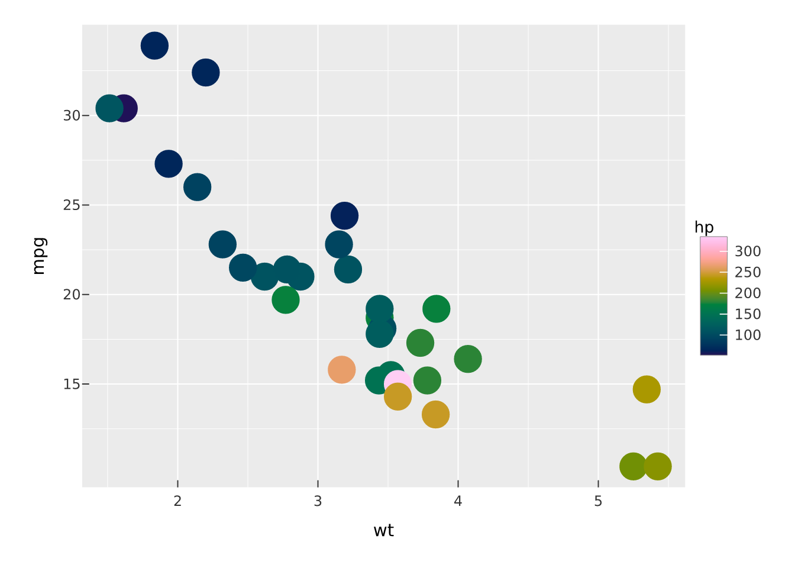
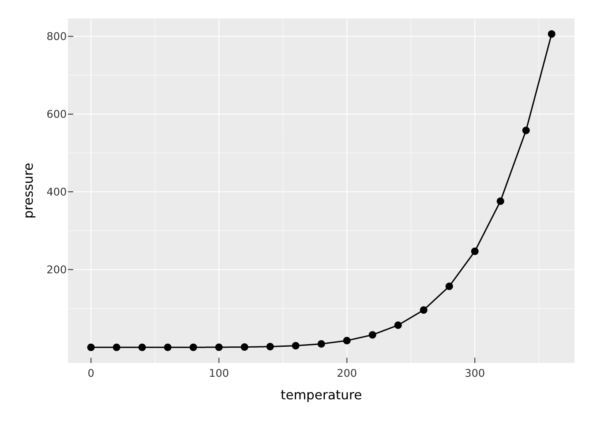
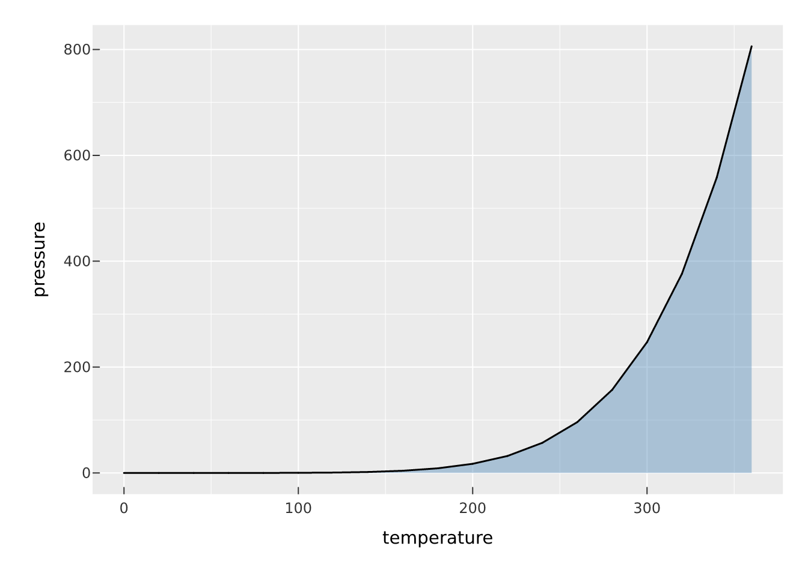
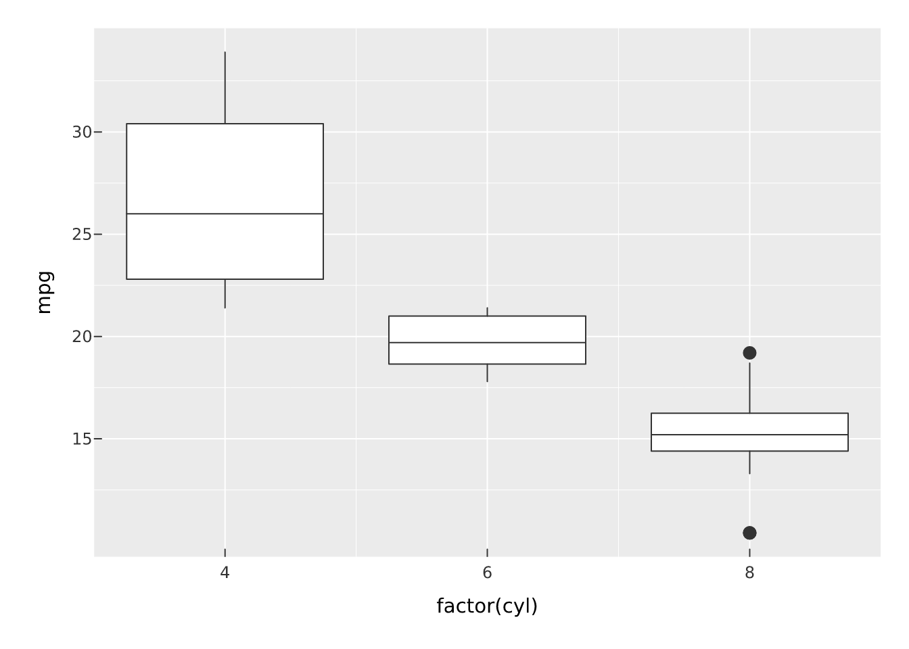
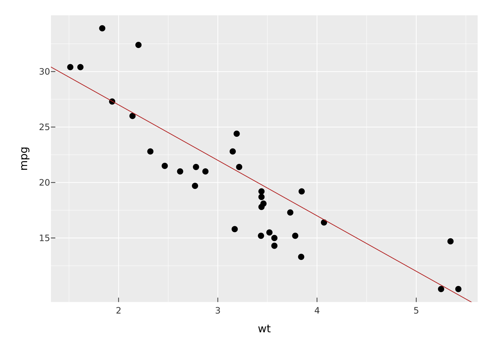
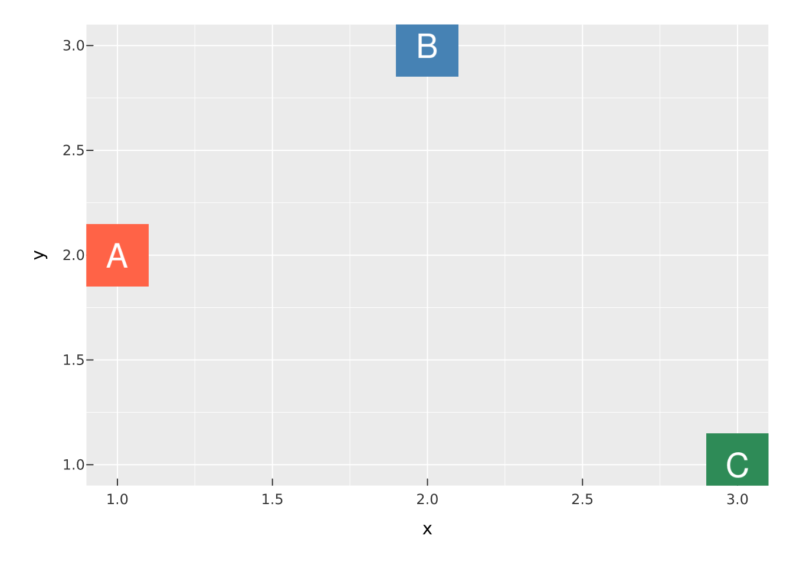
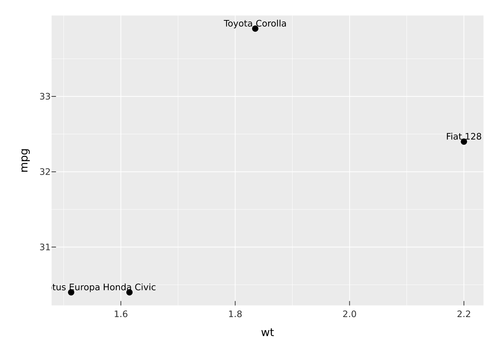
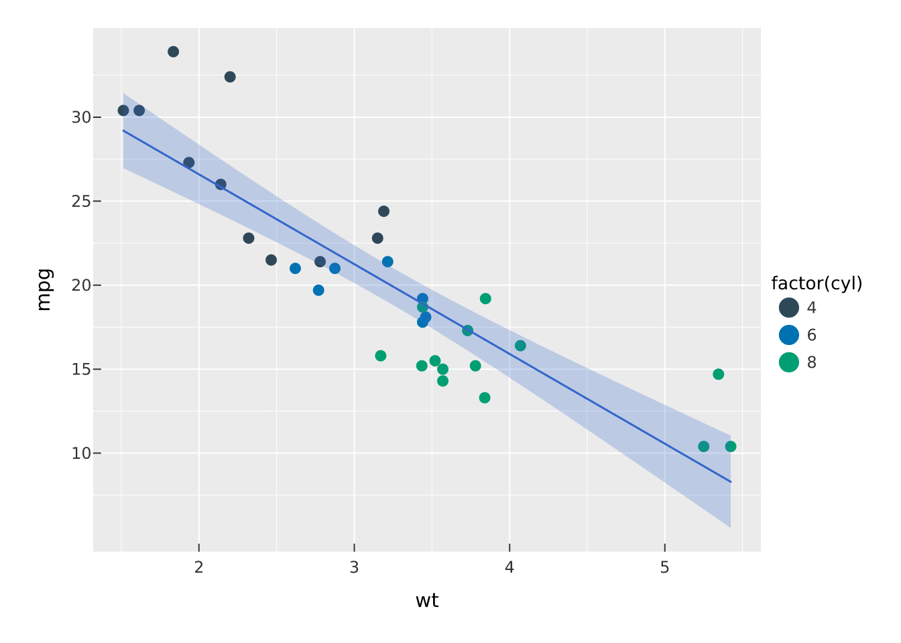

vplot(mtcars) |>
mark_point(x = wt, y = mpg, color = hp, size = 3)
A vellumplot plot is a stack of marks. Each mark_*() appends one drawing layer to the spec, and every mark reads the same grammar: bare column names (or expressions) captured with tidy evaluation become encodings, while scalar values become constant aesthetics. color = hp maps the hp column through a scale; color = "red" paints every element red.
vplot(mtcars) |>
mark_point(x = wt, y = mpg, color = hp, size = 3)
You can stack as many marks as you like on a panel, and scales train across all of them at once.
mark_point() draws markers; mark_line() and mark_step() connect points in x order; mark_rule() draws reference lines. mark_point() also takes shape (one of "circle", "square", "triangle", "diamond", "plus", "cross") and a position = "jitter" adjustment.
vplot(pressure) |>
mark_line(x = temperature, y = pressure) |>
mark_point(x = temperature, y = pressure)
mark_bar() draws bars from a zero baseline. Give it an explicit y for heights, or omit y and it counts rows per category (the count stat). When fill is mapped, groups stack by default; switch to side-by-side with position = "dodge" or normalise to 1 with position = "fill".
For finer control, the position argument also takes a parameterised position_*() object. position_dodge2() fills each category’s band by the groups actually present (so a ragged grouping stays centred); position_nudge() offsets by a constant; position_jitter(width=, seed=) and position_jitterdodge() control scatter for overplotted categorical points.
vplot(mtcars) |>
mark_bar(x = factor(cyl), fill = factor(gear), position = position_dodge2(padding = 0.15))
mark_area() fills between a y line and zero, mark_ribbon() fills between ymin and ymax, and the interval marks draw ranges: mark_errorbar() (with caps), mark_linerange() (without), and mark_segment() from (x, y) to (xend, yend).
vplot(pressure) |>
mark_area(x = temperature, y = pressure, fill = "steelblue", alpha = 0.4) |>
mark_line(x = temperature, y = pressure)
mark_boxplot() summarises the raw y values per x category into a box-and-whisker (box from Q1 to Q3, median line, whiskers at 1.5 times the IQR, outliers as points).
vplot(mtcars) |>
mark_boxplot(x = factor(cyl), y = mpg)
Like points and bars, these summary marks are addressable: an error bar or line range keyed with data_id/tooltip carries that identity on every segment it draws, and a boxplot keys each box by its category — so they hover, tooltip, and select as units once rendered as an interactive widget.
mark_tile() draws a rectangle at each (x, y) coloured by fill; mark_raster() is the same thing drawn as a single raster image (a fast path that needs a complete regular grid). For continuous data, mark_bin2d() and mark_hex() bin x and y into a grid and colour each cell by count.
grid <- expand.grid(x = 1:8, y = 1:8)
grid$z <- with(grid, sin(x / 2) + cos(y / 2))
vplot(grid) |>
mark_tile(x = x, y = y, fill = z) |>
scale_fill_continuous(palette = "Batlow")
mark_contour() draws iso-density contour lines of a 2-D point cloud (and mark_contour_filled() fills the bands), coloured by level. See the statistical marks article for the details.
vplot(faithful) |>
mark_point(x = eruptions, y = waiting, color = "grey70") |>
mark_contour(x = eruptions, y = waiting)
mark_text() draws the label aesthetic as text at each (x, y); mark_label() adds a filled background behind each label so it stays legible over busy marks. size is in points, and angle can be mapped or constant.
top <- mtcars[mtcars$mpg > 30, ]
vplot(top) |>
mark_point(x = wt, y = mpg) |>
mark_text(x = wt, y = mpg, label = rownames(top), vjust = "bottom", size = 9)
On a crowded scatter, labels collide. repel = TRUE moves them apart with a force-directed layout and draws a thin leader back to each point. The layout is resolved against the true rendered panel size (so it doesn’t drift with the data scale) and is reproducible via seed.
vplot(mtcars) |>
mark_point(x = wt, y = mpg) |>
mark_text(
x = wt, y = mpg, label = rownames(mtcars),
repel = TRUE, size = 7, seed = 1
)
mark_image() puts a bitmap at each (x, y) in place of a marker: a flag or a company logo. src is a column of file paths (one image per datum) or a single path reused at every point. size sets the height in millimetres, and the width follows each image’s own aspect ratio, so nothing stretches.
badge <- function(text, fill) {
path <- tempfile(fileext = ".png")
magick::image_blank(120, 120, color = fill) |>
magick::image_annotate(text, size = 64, gravity = "center", color = "white") |>
magick::image_write(path)
path
}
d <- data.frame(
x = 1:3,
y = c(2, 3, 1),
logo = c(badge("A", "tomato"), badge("B", "steelblue"), badge("C", "seagreen"))
)
vplot(d) |>
mark_image(x = x, y = y, src = logo, size = 14)
Reading images needs the magick package (a suggested dependency), which decodes PNG, JPEG, SVG, and more. Because size is in millimetres rather than data units, images keep their physical size as the panel resizes.
mark_pie() and mark_donut() are the part-of-whole shortcuts. Each value becomes a wedge; fill colours the slices. Under the hood they are a stacked bar projected through coord_polar(), which they set for you.
parts <- data.frame(part = c("a", "b", "c", "d"), n = c(3, 5, 2, 4))
vplot(parts) |>
mark_donut(value = n, fill = part, inner_radius = 0.6)
For polar plots generally, coord_radial() extends coord_polar() with a central hole (inner_radius) and a partial start–end arc — e.g. a semicircular coxcomb:
vplot(mtcars) |>
mark_bar(x = factor(cyl), fill = factor(cyl)) |>
coord_radial(theta = "x", start = -pi / 2, end = pi / 2, inner_radius = 0.2)
Because scales train across every layer, mixing marks on one panel works. Here a point cloud and a fitted line share the same trained x and y axes.
vplot(mtcars) |>
mark_point(x = wt, y = mpg, color = factor(cyl)) |>
mark_smooth(x = wt, y = mpg, method = "lm")
From here:
mark_sf() maps and vgraph() node-link diagrams.